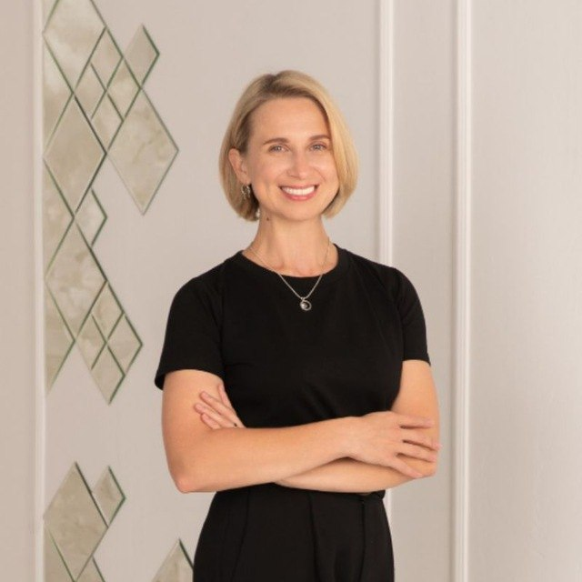
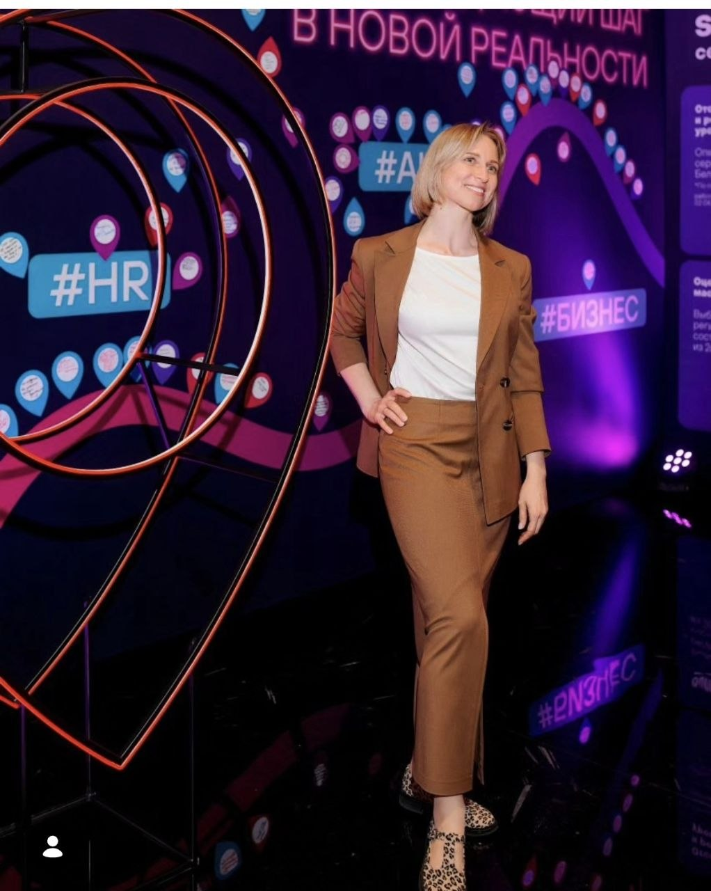
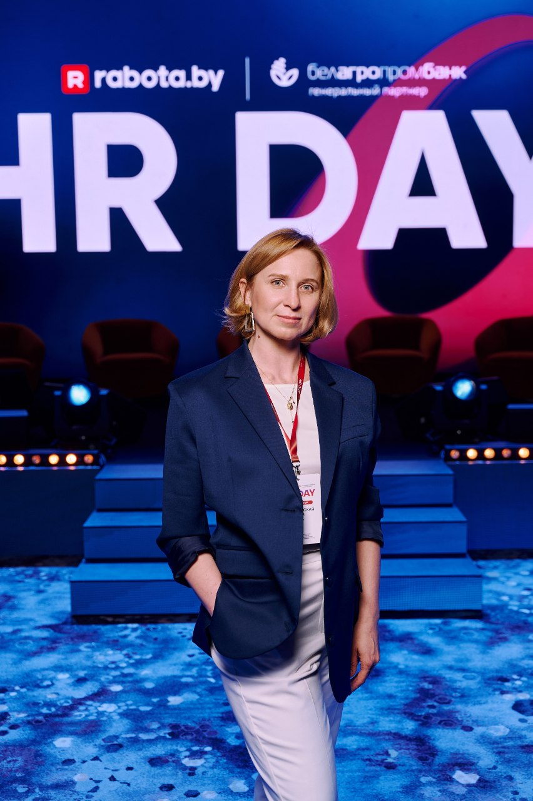
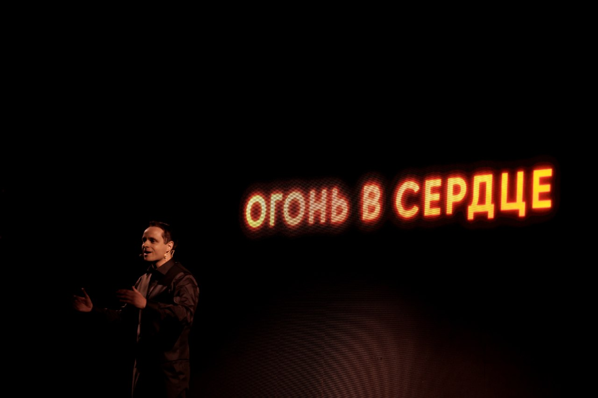

Про меня

Я — маркетинг-лидер с опытом в digital, performance, PR, продуктовом и B2B-маркетинге.
Помогаю компаниям выстраивать маркетинг как систему: от стратегии, позиционирования и команды до лидогенерации, аналитики, воронок и бизнес-результата.
Мой подход — соединять данные, интуицию, смыслы и людей. Я люблю сложные задачи, в которых важно увидеть не только цифры, но и контекст: продукт, рынок, аудиторию, команду и то, как всё это связано между собой.
Факты обо мне
- Мама двоих прекрасных взрослых сыновей и собаки Альбы.
- Автор проекта «Старший специалист» и сторонник идеи борьбы с возрастными стереотипами.
- Люблю то, что делаю, люблю людей и многогранность вещей и смыслов.
- Сильный интуит и эмпат.
- 23 года профессионального опыта в медиа, PR и маркетинге.
- Работала в IT, банкинге, фарме, e-commerce и медиа.
- Участвовала в запуске первой в Беларуси онлайн-аптеки с бронированием и доставкой.
- Запускала первый в Беларуси онлайн-банк.
- Организатор крупнейшей в стране бизнес-конференции.



Карьерный путь
Медиа и журналистика
Новости, репортажи, сценарии и документальные проекты дали сильную базу в сторителлинге, редактуре, работе с фактами и понимании аудитории.
Переход в digital
Социальные сети, рекламные кампании, продвижение онлайн-платформ, контент и работа с вовлечением аудитории.
PR и продуктовые коммуникации
В банковской сфере: PR, внешние коммуникации, рекламные кампании и продвижение digital-продуктов. Усилился интерес к продуктовым метрикам, удержанию и связи коммуникаций с бизнес-результатом.
E-commerce и запуск новых направлений
В фармацевтическом холдинге: digital, PR, локальный маркетинг и запуск онлайн-направления, включая первую в Беларуси онлайн-аптеку с бронированием и доставкой.
B2B и IT-маркетинг
Inbound-лидогенерация, SEO, PPC, контент-маркетинг, посадочные страницы, аналитика и отчётность, вывод продуктов на рынок и маркетинговые воронки для клиентов.
Маркетинг как система
Стратегия, сильная команда, архитектура процессов, развитие продукта и прозрачная для стейкхолдеров связь маркетинга с бизнес-результатом.
Образование
Моё образование соединяет коммуникации, бизнес и управленческий подход.
- БГУ, факультет журналистики — Беларусь.
- ВШЭ, Высшая школа экономики — Россия.
- БГУ, Институт бизнеса, MBA — Беларусь.
Дополнительно регулярно усиливаю экспертизу в digital-маркетинге, веб-аналитике, продуктовом маркетинге, оценке эффективности кампаний и применении нейросетей в бизнесе.
Мои фокусы
Marketing strategy
Цели, позиционирование, рост и приоритеты.
Brand & communications
Смыслы, репутация, доверие и узнаваемость.
Performance & growth
Каналы, воронки, лиды, конверсии и ROI.
Product marketing
Упаковка ценности, JTBD, go-to-market, запуск новых направлений.
Analytics & CRM
Данные, сегменты, отчётность и управляемая коммуникация.
Team leadership
Процессы, роли, фокус и энергия команды.